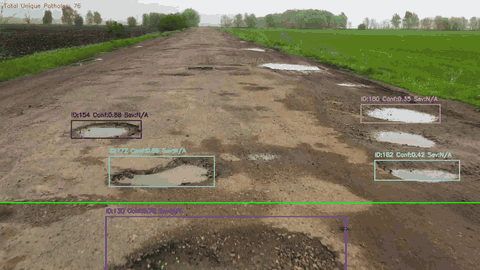

See it. Feel it.Log every pothole.
IPDS is a low-cost dual-ESP32 and YOLOv8 system that detects potholes in real time, tracks each one, scores its severity from accelerometer jerk, and logs it with GPS and a timestamp.

From camera frame to a ranked maintenance log
Most pothole projects stop at drawing a box on an image. IPDS only logs a pothole when the camera sees it and the vehicle feels it.
Detect
YOLOv8m, fine-tuned for potholes, finds them in each frame of the ESP32-CAM stream.
Track
SORT (Kalman filter and Hungarian matching) gives each pothole a stable ID, so it is counted once.
Feel
At the wheel line, the hub asks the sensor node for an MPU6050 burst and computes peak jerk.
Fuse
No impact, no log. Severity combines detection confidence (70%) with measured impact (30%).
Log
Each event goes to CSV with RTC time and GPS position, plus an annotated MP4 of the drive.
Two ESP32 boards, one processing hub
The camera streams continuously. The sensors only answer when asked. A Python hub ties them together.
ESP32-CAM
Streams 320×240 MJPEG frames from an OV2640 camera over WiFi.
ESP32 dev board
Answers GET /query?pothole_id=N with accelerometer, timestamp and GPS fields as JSON.
Python on a laptop or Jetson
- 1YOLOv8m detects potholes and SORT assigns persistent IDs.
- 2Holds back tracks that are too large, too wide, or stationary for more than 10 frames.
- 3When a track crosses the reference line, it queries the sensor node five times.
- 4Computes peak jerk. No impact means the event is rejected.
- 5Scores severity, appends a CSV row and annotates the video.
Reading I²C sensors on the ESP32-CAM blocks frame capture and drops the frame rate. Moving all sensor I/O to a second, event-driven board keeps the video smooth, and both boards stay cheap.
Measured, not just claimed
Model metrics on the validation split, and a real 12-minute field drive on 20 March 2026.
Model accuracy
| Metric | Value | Bar |
|---|---|---|
| mAP@0.5 | 81.68% | |
| mAP@0.5:0.95 | 55.95% | |
| Precision | 82.33% | |
| Recall | 74.42% |
Field log: 50 potholes in one drive
| Band | Peak jerk | Rows | Share |
|---|---|---|---|
| Low | 1.6–2.7 | 8 | |
| Medium | 3.0–5.9 | 22 | |
| High | 6.0–9.4 | 20 |
jerk_norm = min(peak_jerk / 20, 1) severity = 0.7 × confidence + 0.3 × jerk_norm
Common parts, and a custom PCB
A 2-layer carrier board for the ESP32-DevKitC and its three modules. Gerbers, BOM and schematic are ready to order.
Bill of materials
- ESP32-CAM (AI-Thinker)Vision node, MJPEG stream
- ESP32 dev boardSensor node, HTTP API
- MPU60506-axis IMU, peak jerk
- NEO-6M GPSLatitude and longitude
- DS3231 RTCTimestamps offline
- Laptop or Jetson NanoYOLOv8 inference
Explore the system visually
Three detailed diagrams of the architecture, the detection logic and the sensor-node wiring.
System block diagram
Seven layers from sensors and firmware to computer vision, fusion and storage.
Open diagramDetection flowchart
Every decision a frame passes through, from capture to the CSV log.
Open diagramSensor-node schematic
Pin-level wiring for the MPU6050, DS3231 and NEO-6M, with I²C pull-ups.
Open diagramRunning in 30 seconds, no hardware needed
Google Colab
Run detection and tracking on a sample image or your own road video in the browser.
Open notebookWokwi simulation
The ESP32 sensor node with MPU6050, NEO-6M GPS and DS3231 running in your browser.
Open simulationGradio demo
Upload images or videos and see detections. Deployable as a Hugging Face Space.
View demo appgit clone https://github.com/SanTiwari07/PotHoleDetection.git cd PotHoleDetection pip install -r requirements.txt # Vision-only on any road video (weights download on first run) python python/main.py --source path/to/road_video.mp4
Common questions
Do I need the ESP32 hardware to try it?
No. Offline mode runs the vision pipeline on any road video, the Colab notebook runs in the browser, and the Wokwi simulation runs the sensor node. In offline mode severity is vision-only and the jerk and GPS columns stay empty.
How is severity calculated?
Peak jerk from the MPU6050 burst is normalised against 20 m/s³ and capped at 1. Severity is 0.7 × YOLO confidence + 0.3 × normalised jerk. Events below the jerk threshold (default 1.5 m/s³) are rejected, so a pothole must be both seen and felt.
What data was the model trained on?
The Pothole Detection dataset by andrewmvd on Kaggle: 665 images converted from Pascal VOC to YOLO format, split 598 / 67. The training scripts in the repo reproduce the model.
Why use two ESP32 boards instead of one?
I²C sensor reads on the ESP32-CAM block frame capture and cut the frame rate. A second board handles all sensor I/O on demand, keeping the video stream smooth while the total cost stays under ₹2,500.
Can I use IPDS in my own project?
Yes. The project code is MIT licensed. Third-party parts keep their own licenses: sort.py is GPL-3.0 and Ultralytics YOLOv8 is AGPL-3.0. If you use it in research, please cite the paper.
Like IPDS? Give it a star.
Stars help other students, researchers and city engineers find the project. It takes one click.
Star IPDS on GitHubThe team
- STSanskar TiwariCore architecture and ML pipeline
- SBSwarali BansodSensor integration and firmware
- EKEshwari KognoleHardware design and testing
- SSShruti ShindeData collection and validation
Cite this work
@software{tiwari2026ipds,
author = {Tiwari, Sanskar and Bansod, Swarali and
Kognole, Eshwari and Shinde, Shruti},
title = {Real-Time Pothole Detection Based on
Vision-Dominant Sensor Fusion and
Dual ESP32 Architecture},
year = {2026},
version = {1.0.0},
url = {https://github.com/SanTiwari07/PotHoleDetection}
}